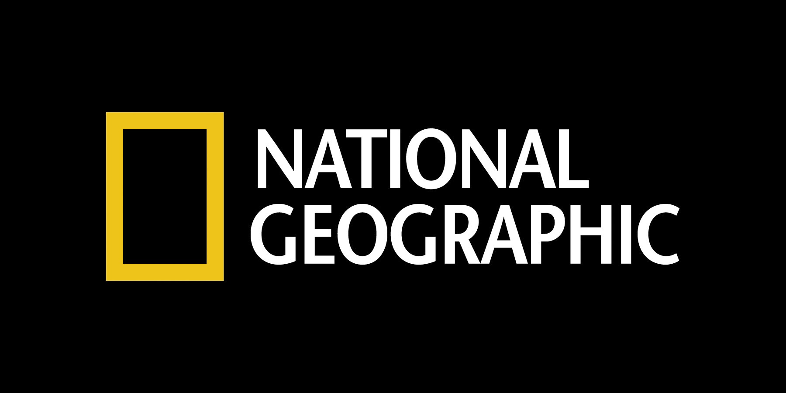
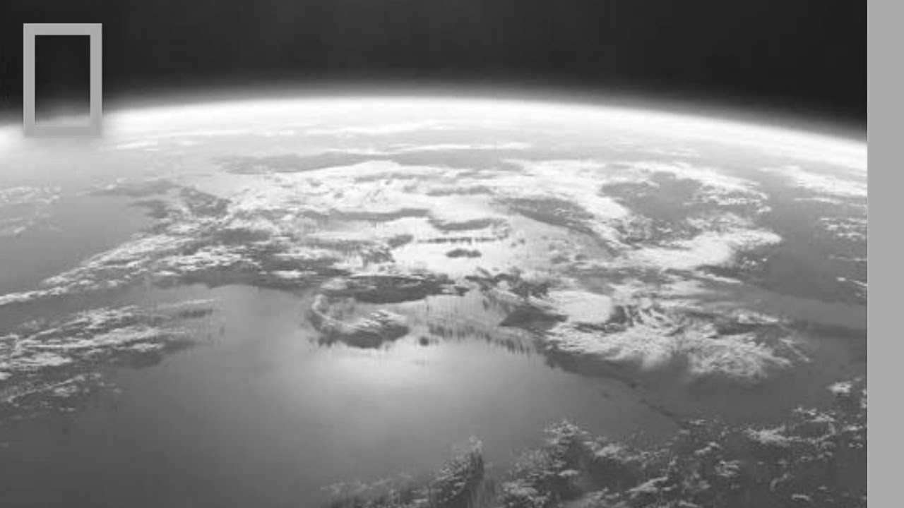
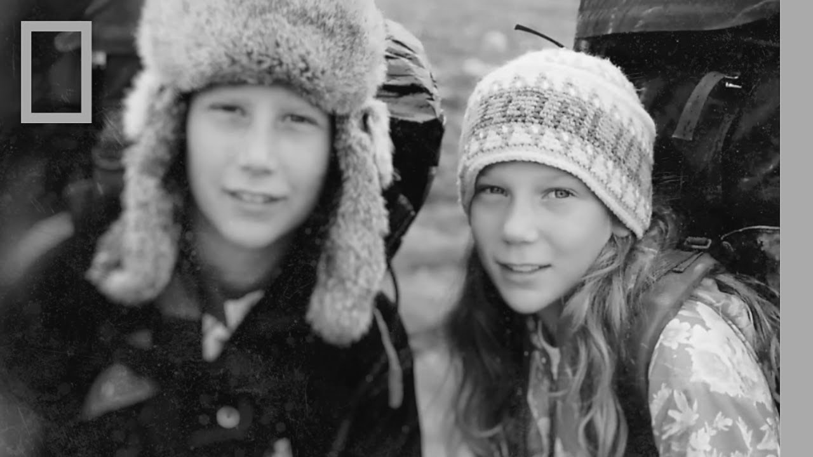
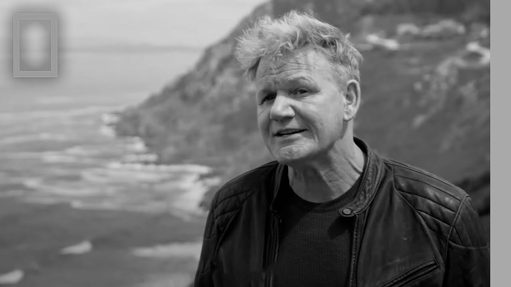
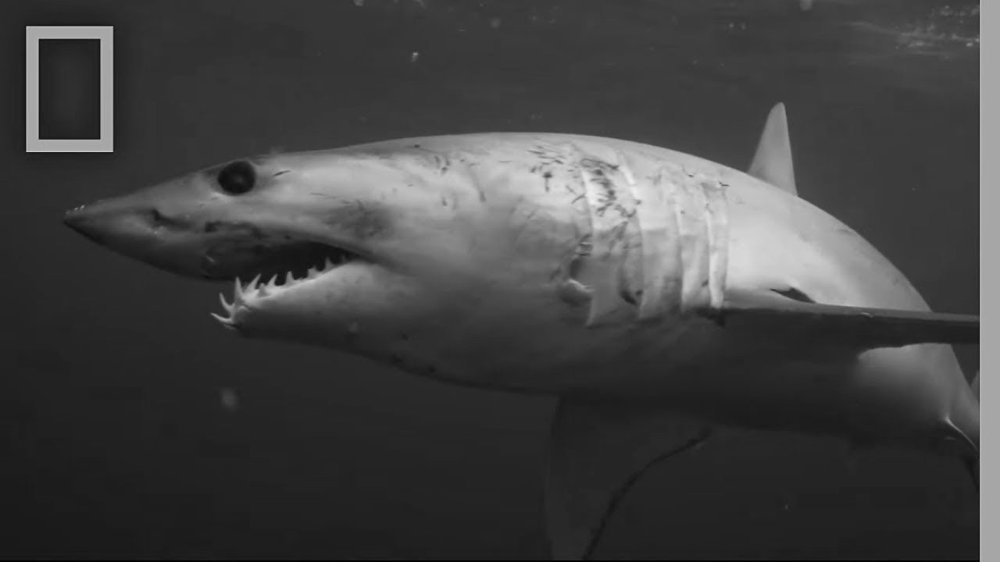
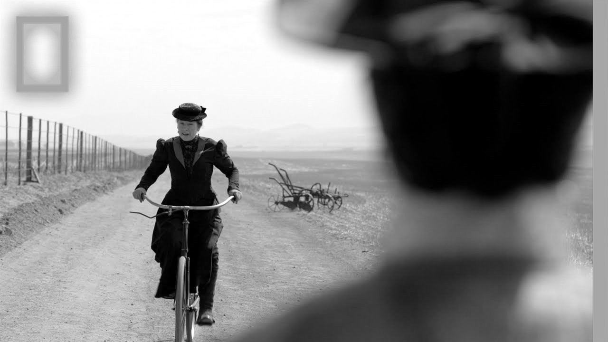
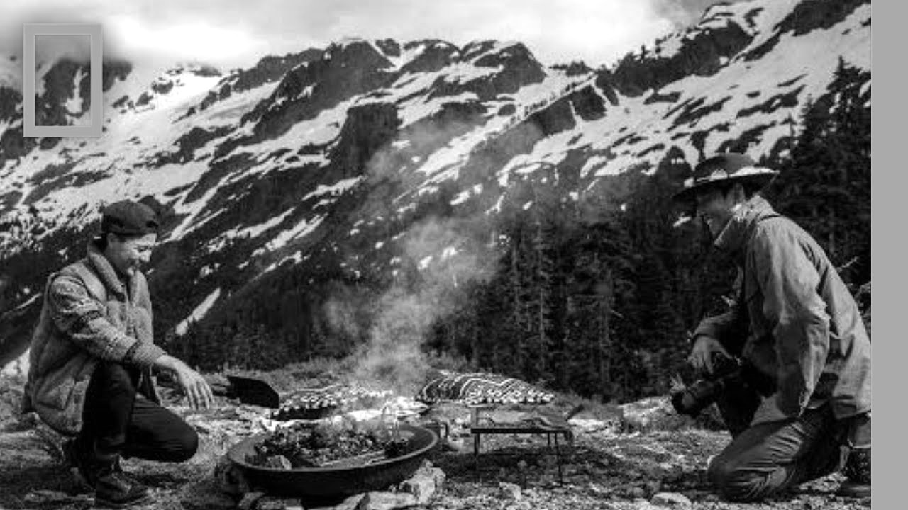
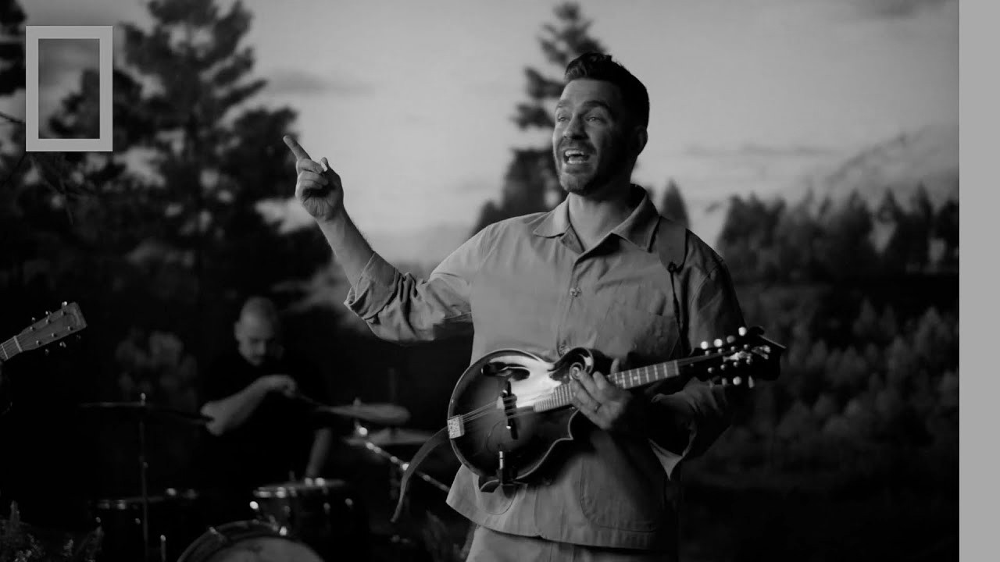

Sejarah
National Geographic Society didirikan pada tahun 1888 di Washington,
D.C., oleh sekelompok ilmuwan dan penjelajah yang ingin meningkatkan
pemahaman dunia tentang geografi dan alam. Majalah
National Geographic pertama kali terbit pada tahun yang
sama, menampilkan foto-foto dan artikel mendalam tentang penemuan
geografis, budaya, dan lingkungan. Pada tahun 1997, National
Geographic meluncurkan saluran televisi pertamanya, National
Geographic Channel, yang kemudian berkembang menjadi beberapa
saluran dengan fokus berbeda, seperti Nat Geo Wild, Nat Geo People,
dan Nat Geo Kids.
Seiring waktu, National Geographic dikenal karena kualitas
fotografi, cerita mendalam, dan komitmennya pada konservasi alam dan
satwa liar. Pada tahun 2015, perusahaan ini bermitra dengan 21st
Century Fox, yang membantu memperluas jangkauan konten mereka secara
global. Kemudian pada 2019, Disney mengakuisisi 21st Century Fox,
sehingga Nat Geo menjadi bagian dari Disney. Hingga kini, National
Geographic tetap berfokus pada pendidikan, eksplorasi, dan
pelestarian dunia, menjangkau pemirsa dari berbagai generasi di
seluruh dunia.

Jenis Tayangan
Alam dan Satwa Liar
Dokumenter seperti Big Cat Week dan
Savage Kingdom
mengeksplorasi kehidupan satwa liar di berbagai habitat, dari
gurun hingga hutan hujan.
Ilmu Pengetahuan dan Teknologi
Tayangan seperti Brain Games dan
Science of Stupid membawa sains dengan cara yang menarik
dan edukatif, mengeksplorasi fenomena ilmiah dan inovasi
teknologi.
Sejarah dan Arkeologi
Serial seperti Lost Treasures of Egypt dan
Ancient Secrets
menggali sejarah dunia dan budaya kuno dengan pendekatan modern
dan penemuan baru.
Budaya dan Petualangan
Program seperti Gordon Ramsay: Uncharted dan
Running Wild with Bear Grylls menghadirkan petualangan
dan eksplorasi budaya yang penuh inspirasi.
Kategori Saluran
National Geographic Channel

Saluran utama dari National Geographic yang menampilkan berbagai
program tentang sains, sejarah, budaya, dan alam.
Tayangan-tayangan di Nat Geo Channel menghadirkan dokumenter
berkualitas tinggi serta program petualangan dan eksplorasi.
Contoh tayangannya meliputi
The National Parks: America's Best Idea,
Cosmos: A Spacetime Odyssey, dan Explorer.
Nat Geo Kids

Saluran yang dirancang khusus untuk anak-anak, dengan konten
edukatif yang menyenangkan dan aman. Nat Geo Kids bertujuan untuk
mengenalkan anak-anak pada ilmu pengetahuan, lingkungan, dan satwa
liar dengan cara yang mudah dipahami. Tayangan di sini biasanya
mencakup animasi dan program interaktif yang mendorong anak-anak
untuk menjelajahi rasa ingin tahu mereka. Contohnya adalah
Brain Child, Animal Jam, dan
Mission Animal Rescue.
Nat Geo People

Saluran ini berfokus pada kisah-kisah manusia dari berbagai
belahan dunia. Tayangan di Nat Geo People lebih berpusat pada
kehidupan sehari-hari, petualangan pribadi, budaya, dan makanan.
Program-programnya menampilkan pengalaman unik individu dan
komunitas, serta bagaimana mereka berinteraksi dengan dunia di
sekitar mereka. Contoh tayangannya meliputi
Gordon Ramsay: Uncharted,
Running Wild with Bear Grylls, dan
Food Lover's Guide to the Planet.
Nat Geo Wild

Saluran ini berfokus khusus pada alam dan satwa liar.
Program-program di Nat Geo Wild biasanya menampilkan kehidupan
hewan di habitatnya, interaksi antarspesies, serta usaha
konservasi satwa. Contoh tayangan populer adalah
The Incredible Dr. Pol, Savage Kingdom, dan
Secrets of the Zoo. Nat Geo Wild cocok untuk mereka yang
tertarik pada dunia hewan dan ingin memahami lebih dalam tentang
ekosistem di alam liar.
Nat Geo Documentary Films

Nat Geo Documentary Films adalah saluran yang menampilkan film
dokumenter panjang dengan tema-tema yang menggugah dan mendalam.
Saluran ini berfokus pada dokumenter dengan topik-topik penting
mengenai alam, konservasi, dan isu-isu global lainnya. Beberapa
film dokumenter yang terkenal termasuk Free Solo,
The Cave, dan Before the Flood.
Nat Geo Mundo
Nat Geo Mundo adalah saluran yang menyajikan tayangan-tayangan
seru dengan fokus pada dunia Latin Amerika dan Hispanik.
Program-programnya menawarkan dokumenter, serial, dan acara
realitas yang menggali budaya, sejarah, dan petualangan. Beberapa
tayangan yang populer di antaranya adalah
Secretos de la Naturaleza, Un Mundo Insólito,
dan El Hombre y la Tierra.
Nat Geo Adventure

Nat Geo Adventure menampilkan berbagai tayangan petualangan yang
penuh tantangan dan eksotis. Saluran ini membawa penonton ke
tempat-tempat yang jarang dijangkau dan penuh risiko, menampilkan
kisah-kisah perjalanan luar biasa, eksplorasi alam, serta
kehidupan ekstrem. Beberapa tayangannya adalah
Ultimate Survival Alaska, Expedition Impossible,
dan Boundless.
Nat Geo Music

Nat Geo Music adalah saluran yang merayakan musik dunia dengan
menghadirkan berbagai genre musik dari berbagai belahan dunia.
Saluran ini menampilkan cerita dan dokumentasi tentang para
musisi, tradisi musik, serta budaya di balik musik tersebut.
Tayangan-tayangan terkenal di antaranya adalah
Music in the Wild, Soundtracks, dan
Exploring Music.